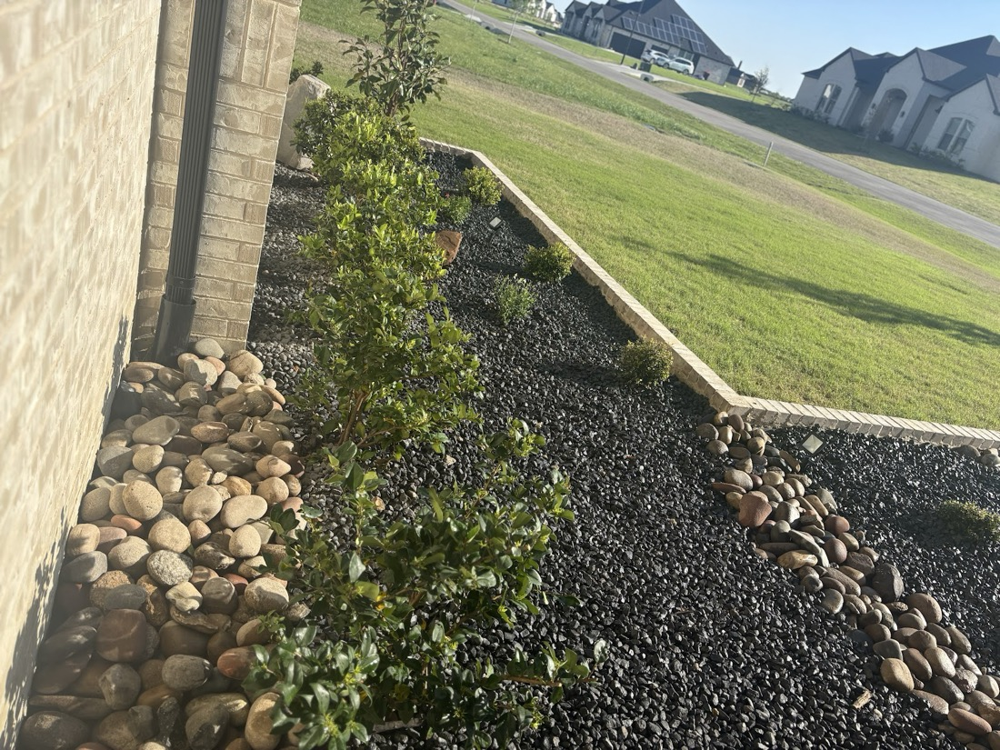

Custom stonework, flowerbed borders, retaining walls and full landscape design for homes across Midlothian and Ellis County.
Kasey, Stephen and the Beaty crew build the parts of a yard people notice first — custom stonework, stone flowerbed borders, fresh beds and clean, healthy lawns. It is hands-on, detail-first work, handled start to finish by the same team.
From a single flowerbed border to a full front-yard redesign, the goal is the same: a finished space that adds real curb appeal and holds up season after season.
Request a quote
The stonework and design work Beaty is known for, plus the everyday lawn and seasonal care that keeps it looking finished.
Stone flowerbed borders, retaining walls, patio and driveway extensions, and outdoor-living stone features.
Full-yard design and installation — beds, plantings, sod and rock, planned to fit your home and how you use the space.
New bed builds, clean-outs, fresh mulch and rock installation that sharpens the whole front of the house.
Sod installation, new plantings and seasonal color to fill in and finish a redesigned yard.
Weekly lawn service and seasonal maintenance to keep the whole property sharp year-round.
Fence installation and staining, gutter installs and cleaning, and the finishing touches that round out a project.
Every photo here is real Beaty work — front-yard stonework, bordered beds and finished lawns from homes across Ellis County.
“An exceptional job with the stonework on our front flower beds — added so much curb appeal.”
“I can’t say enough great things about Beaty Lawn and Landscaping! They completely transformed our yard. It looks absolutely beautiful. Their team is incredibly professional, hardworking, and detail-oriented.”
“Absolutely the best lawn service company I’ve ever worked with. Very knowledgeable, fast paced and so so friendly. They were the best price and left my property looking better than anyone.”
Free estimates on stonework, beds and landscape design across Midlothian and Ellis County.
{kind=link}
{kind=link}
{kind=link}
{kind=link}
{kind=link}
{kind=link}
{kind=link}